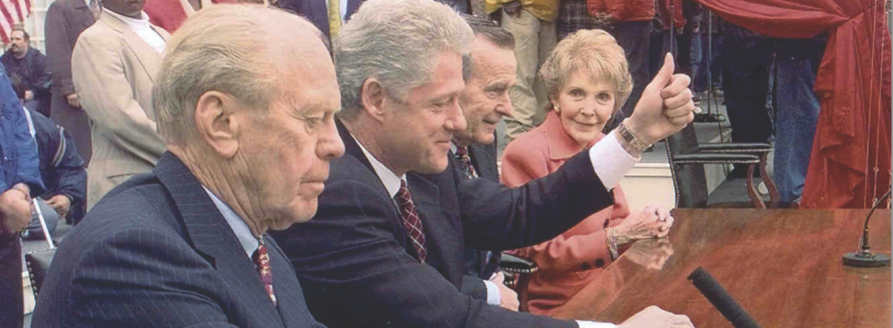
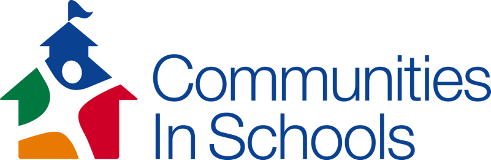
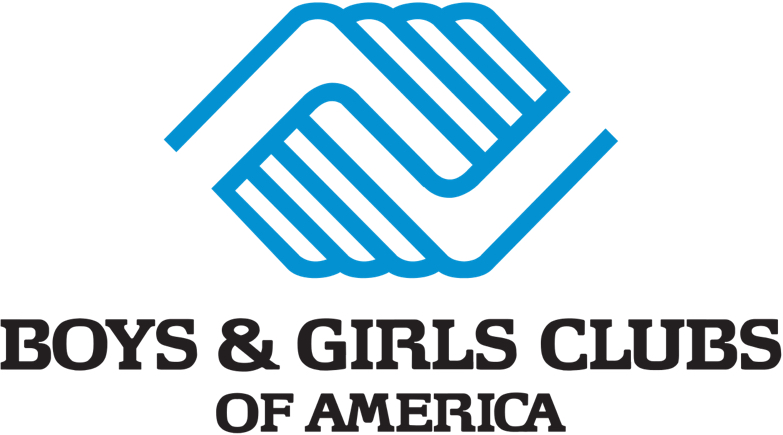
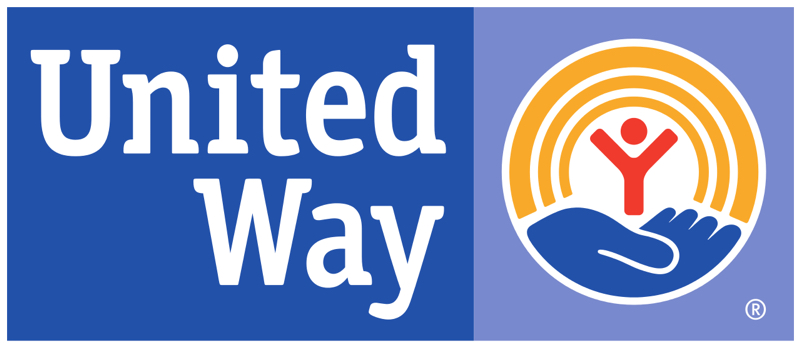
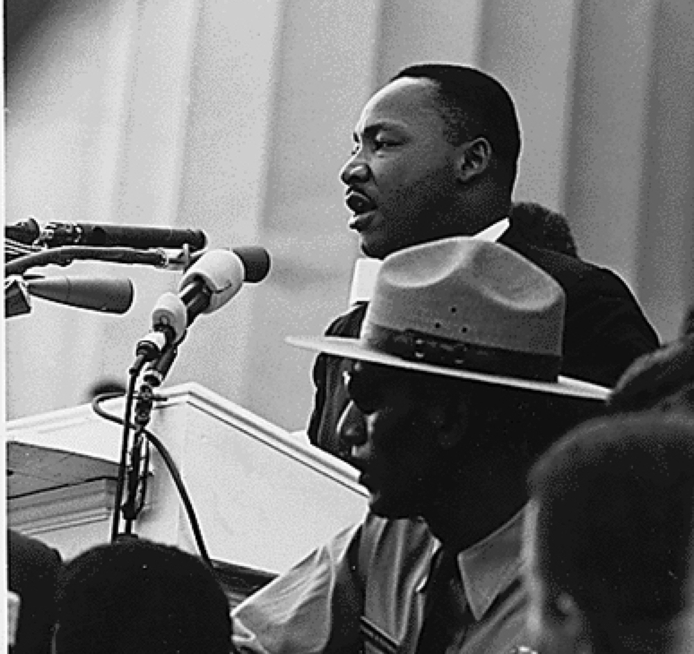
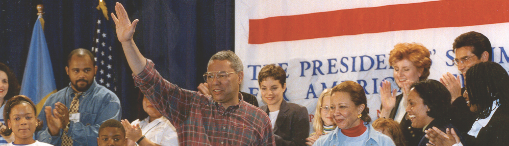
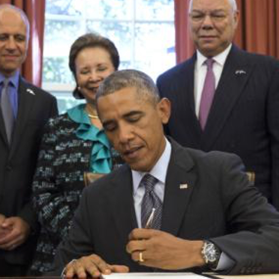
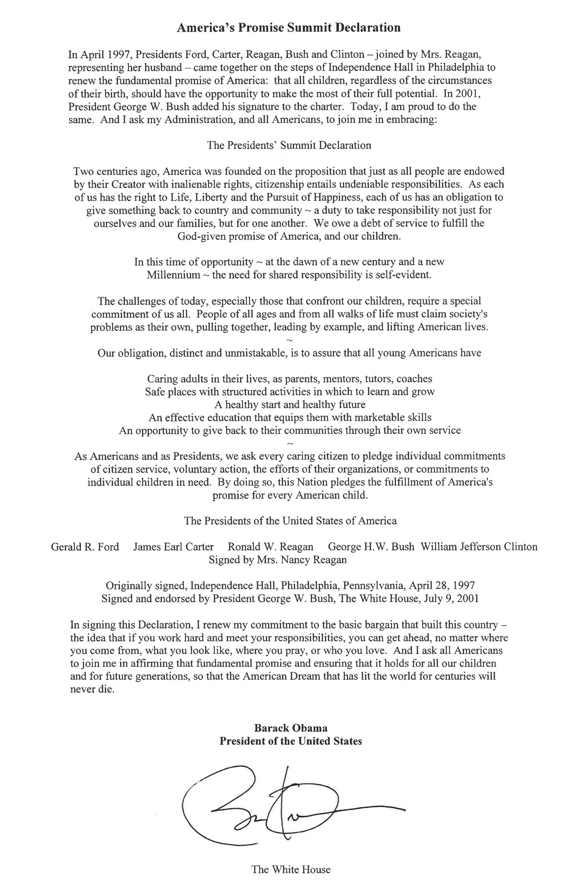

WHY AMERICA'S PROMISE ALLIANCE WAS FORMED
The largest alliance dedicated to children and youth started with a simple idea. Businessman and former Michigan Governor George Romney believed the nation faced “vitally serious social problems” that threatened our children’s lives and our future.
Reversal, he wrote, required an urgent, “full-scale mobilization of the entire nation.” In 1995, Governor Romney shared the idea of a presidents’ summit with Harris Wofford, CEO of the Corporation for National and Community Service, and Bob Goodwin, CEO of Points of Light.
Governor Romney died before his dream could become reality. At his funeral, Lenore Romney, George’s widow, asked Wofford if he would pursue her husband’s plans for a national summit. Wofford made a promise: “We will make it happen.”
THE PRESIDENTS' SUMMIT - AN UNPRECEDENTED EVENT
Bigger Than Any Single Administration
When people first heard talk of a national summit, some weren’t sure exactly who was summoning the participants. Was it the President’s Summit? Or the Presidents’?
Faithful to Romney’s vision, the organizers reached out to all the living presidents: Bill Clinton, George H. W. Bush, Jimmy Carter, Gerald Ford and Nancy Reagan representing Ronald Reagan.
The official title — the Presidents’ Summit for America’s Future — reinforced both what was at stake and that the cause was bigger than any single administration or party. As Ray Chambers and Harris Wofford, two of the Summit’s architects, described it, “the power of an apostrophe” — Presidents’, not President’s — made all the difference.

“The power of an apostrophe—Presidents’, not President’s — made all the difference”
RAY CHAMBERS & HARRIS WOFFORD, TWO OF THE ARCHITECTS BEHIND THE PRESIDENTS' SUMMIT FOR AMERICA'S FUTURE.
When people first heard talk of a national summit, some weren’t sure exactly who was summoning the participants. Was it the President’s Summit? Or the Presidents’?
Faithful to Romney’s vision, the organizers reached out to all the living presidents: Bill Clinton, George H. W. Bush, Jimmy Carter, Gerald Ford and Nancy Reagan representing Ronald Reagan.
The official title — the Presidents’ Summit for America’s Future — reinforced both what was at stake and that the cause was bigger than any single administration or party. As Ray Chambers and Harris Wofford, two of the Summit’s architects, described it, “the power of an apostrophe” — Presidents’, not President’s — made all the difference.
The Founding Alliance
The Presidents’ Summit began as one person’s idea, but it quickly became a partnership, an alliance to lift up, magnify and accelerate the work of all.
Points of Light and the Corporation for National and Community Service helped organize the Summit and brought strengths in citizen service. As the gathering took shape with its focus on children and youth, Communities In Schools, Boys & Girls Clubs of America, the United Way of America and MENTOR joined the team.
These six founding organizations in turn leveraged their national networks, organized delegations and mobilized others — activities that became hallmarks of Alliance partners and began to give America’s Promise the reach and strength to support communities in the years to come.



“For the sake of our nation and our children, we cannot afford to allow the wrong road to become jammed, while the right road remains traveled by only those blessed with greater means or privilege. We cannot afford to surrender America’s Promise.”
CONFERENCE PROGRAM, PRESIDENTS' SUMMIT FOR AMERICA'S FUTURE, APRIL 1997
A Well-Represented Nation
The animating idea behind the Presidents’ Summit mobilized Americans from all walks of life and scores of communities to answer the call on behalf of America’s children.
Among the 3,000 participants were 25 governors, 9 lieutenant governors, 92 mayors, 122 key business leaders, seven Cabinet members and delegations from 145 communities.
The media was well-represented, including opinion shapers from William Kristol to Clarence Page, Arianna Huffington to Sam Donaldson to LL Cool J (representing MTV). Also attending: civil rights leader Dorothy Height, future Senator Al Franken, future presidential candidate (and George Romney’s son) Mitt Romney, future Governors John Kasich and Ed Rendell and future First Lady Laura Bush.
It had been billed as the Presidents’ Summit. In reality, it was the nation’s.
3,000
participants
25
governors
9
lieutenant governors
92
mayors
122
business leaders
7
cabinet members
145
community delegations
Finding a Name
The Presidents’ summit developed into America’s Promise Alliance in recognition that answering the call to improve the lives’ of America’s youth was going to be a sustained effort living well beyond that day in 1997. The name “America’s Promise” came from Dr. Martin Luther King’s “I Have a Dream” speech in which Dr.t King compared the Constitution and Declaration of Independence to a promissory note.
“The note,” Dr. King said, “was a promise that all men — yes, black men as well as white men — would be guaranteed the inalienable rights of life, liberty and the pursuit of happiness.”
That solemn promise of a nation, as yet unfilled, lay at the heart of the presidents’ call to action for America’s young people, and to the creation and naming of America’s Promise.

“When the architects of our republic wrote the magnificent words of the Constitution and the Declaration of Independence, they were signing a promissory note to which every American was to fall heir. This note was a promise that all men, yes, black men as well as white men, would be guaranteed the unalienable rights of life, liberty, and the pursuit of happiness.”
DR. MARTIN LUTHER KING
Finding a Leader
Retired Gen. Colin L. Powell became America's Promise's Founding Chairman - leading the movement that arose from the Presidents’ Summit. Both General Powell and his wife, Alma, were highly respected as advocates for children and as leaders who transcend partisan politics. That respect, in turn, aided the effort to enlist alliance partners that would be essential to the cause. Impressed by the zeal of those who joined the effort, General Powell was eager to launch the campaign. “It’s good to have an army again,” he said.
Today, Alma Powell serves as Chair of America's Promise. As Mrs. Powell has told audiences across the country, her grandfather was born into slavery, and her grandmother was born just after slavery ended. Against enormous odds, both earned college degrees — then saw their five children through college, too. In the process, they altered the course of her family.
For adults and children alike, Mrs. Powell’s story is a testament to the truths that are essential to our work: History is not destiny and education builds pathways.

Ongoing Endorsement
Since the founding, Presidents George W. Bush and Barack Obama have signed the Declaration, meaning that every president in the past 40 years has endorsed these universal ideals.
When it comes to addressing many of the problems we face as a nation, it isn’t a question of partisan politics, of one side against another, it’s a question of all pulling together for the common good.”
PRESIDENT GEORGE H. W. BUSH AT THE SUMMIT

THE IMPACT OF THE PRESIDENTS' SUMMIT
The presidents’ belief that all Americans share a solemn obligation to the nation’s children helped create a powerful wave of civic action across this country that continues today.
Admission to the Presidents’ Summit came at a well-advertised price. All participants — communities, states, nonprofits, businesses — agreed to make a concrete, quantifiable commitment to improve the quality of young people’s lives through one or more of the Five Promises. Impressive commitments were made by corporate America, nonprofits and the public sector. Soem say the commitments marked a clear transition in the business community’s view of its own role in improving the lives of the nation’s young people.
Many of those original commitments were not only met and exceeded, but greatly expanded over the past 20 years.
The President's Summit, 1997
510 commitments
from companies, organizations and collaboratives
404 communities
committed to cross-sector collaboration as Communities of Promise
THE SUMMIT DECLARATION
The Summit Declaration that serves as the guiding force for the movement they started and for America’s Promise Alliance. In 1997 it was signed by all the living presidents: Bill Clinton, George H. W. Bush, Jimmy Carter, Gerald Ford and Nancy Reagan representing Ronald Reagan. In July 2001, President George W. Bush added his signature. President Barack Obama signed the declaration in September 2014.
